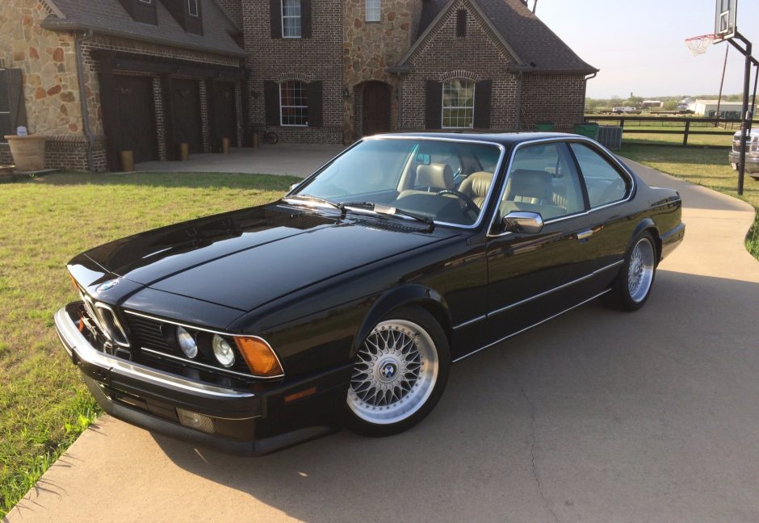

About the car:
The BMW E24 is the first generation of the 6 Series grand tourer coupés which was produced from January 1976 to April 1989. It replaced the E9 coupés and was, after a 16-year hiatus, succeeded by the E63 6 Series in 2004. The E24 was produced solely in a 2-door coupe body style. Aside from the M635CSi/M6 models, the E24 was powered by a range of BMW M30 six-cylinder engines.
Specs:
- Engine type: Inline 6
- Displacement: 3.5 l
- Power: 286 ps
- Torque: 340 Nm
- Transmission: 5 speed manual
If you want to learn more about the E24 series, click the link below: